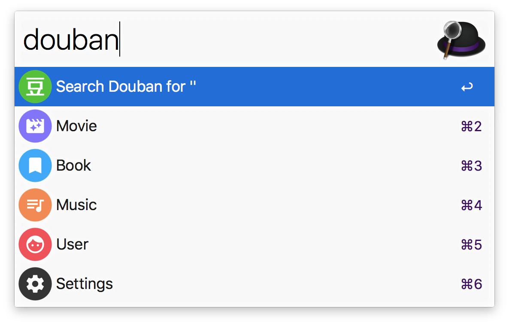
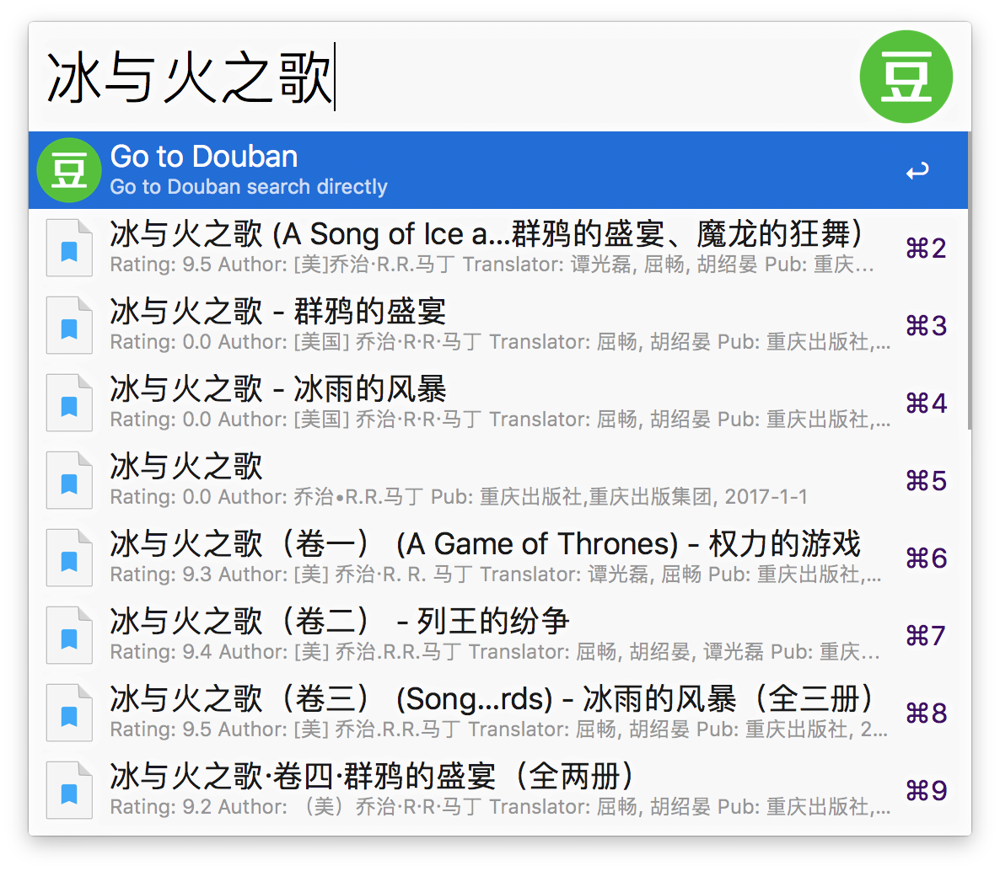
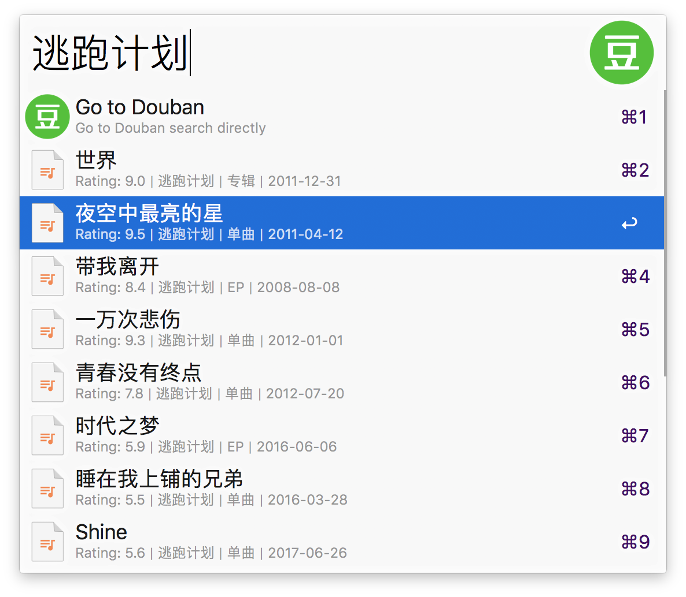
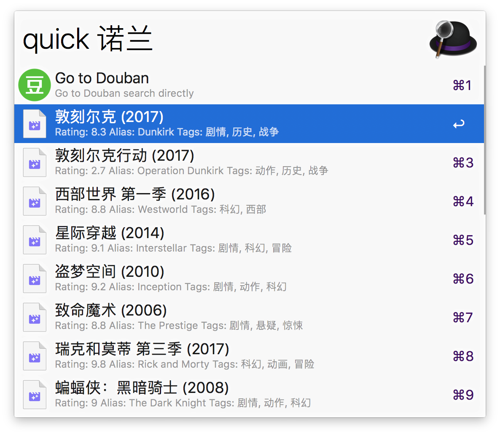

做了一个豆瓣搜索的 Workflow for Alfred
我刚刚开始学 Python，写了这个 Alfred workflow 练练手。平时喜欢看看豆瓣的评分，用 Alfred 查看方便不少。

Alfred 本身支持添加豆瓣的网址进行搜索，但是毕竟还是需要浏览器打开，不能实时地展示搜索结果。当然了，去豆瓣的网站搜索能获得更全面的信息，所以我将两种方式结合在了一起。
整个 workflow 分为两个层级，第一个层级选择不同搜索类型，也可以选择直达豆瓣。选择相应选项进入第二个层级，如果选择了电影，将实时展示电影的搜索结果。
功能
即搜即得
支持搜索电影、图书、音乐、用户。点击电影条目即可进入相应豆瓣页面。按 shift 或 command + y 预览海报或封面等图片。



前往豆瓣
有些时候直接前往豆瓣可以获得更完整的搜索信息。无论在哪个层级，第一个选项都可以直达相应的豆瓣搜索页面。如果遇到网络错误等情况，第一个选项的标题也会变成错误提示。
快捷搜索
Alfred 中使用关键字 quick 可以直接调用第二个层级进行搜索，方便搜索常用的选项。我一般都是搜索电影，默认搜索电影。支持自定义默认选项。

自定义配置
第一个层级提供了一个 Settings 设置项，点击会打开配置文件，在里面即可定义部分配置。包括：
- 定义第一个层级各个选项的显示与否，以及排列顺序
- 定义请求的条目数量
- 定义快捷搜索的选项
- 设置 apikey
注意事项
这个 workflow 是调用豆瓣公共 API 实现的。豆瓣 API 有次数限制，公共 API 限制单 IP 150 次/小时，带上 apikey 之后限制单 IP 500 次/小时。豆瓣 apikey 暂不对个人开放申请，一般来说公共的足够使用。如果你有 apikey，填入配置文件即可。